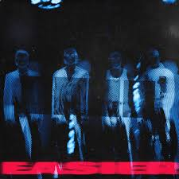
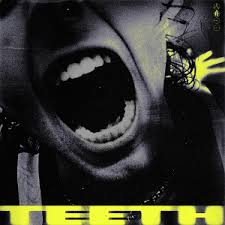

5 Second of Summer
5 Seconds of Summer, often abbreviated as 5SOS, is an Australian pop-rock band known for their high-energy performances, catchy hooks, and relatable lyrics. Rising to fame with their breakout hit "She Looks So Perfect," the band has continually evolved their sound, blending elements of pop, punk, and rock to create music that resonates with fans worldwide.
Top Songs
Dive into 5 Seconds of Summer's top hits, including the anthemic "Youngblood," the heartfelt "Amnesia," and the infectious "Teeth." Their music captures themes of love, youth, and self-discovery, offering a soundtrack for life's highs and lows.
Bad Omens

Easier
Me Myself & I
Moving Along
